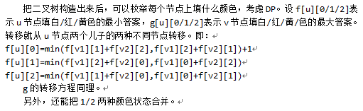

原文连接:https://www.cnblogs.com/I-Love-You-520/p/11272872.html
T1 立方数
题目
【题目描述】
作为XX战队的狂热粉丝，MdZzZZ看到了自己心仪的队伍在半决赛落败，顿时心灰意冷。看着自己手中的从黄牛那里抢来的天价总决赛门票，MdZzZZ觉得去鸟巢已经没有意义了，于是他决定去跳“水立方”。在他准备进“水立方”体育馆时，一位大妈拦住了他的去路，并产生了一下对话：
大妈：“年轻人我看你印堂发黑，恕我冒昧直言，此去一行怕是会有什么不测。”
MdZzZZ：“大妈别拦我，我要跳水立方发泄一下！”
大妈：“年轻人，做事要三思而后行，你知道这水立方最著名的是什么吗？”
MdZzZZ：“不知...”
大妈：“这水立方最有名的是‘立方数’！”
MdZzZZ：“哦？”
大妈：“别急，听我细细道来。‘立方数’就是，如果一个数可以被写作是一个正整数的3次方，则这个数就是立方数。例如1,8,27就是最小的3个立方数。”
MdZzZZ：“……”
大妈：“当然，想要在这水立方中来去自如，你需要知道‘立方差数’！”
大妈：“若一个数可以被写作是两个立方数的差，则这个数就是‘立方差数’，例如7(8-1),26(27-1),19(27-8)都是立方差数。如果你能够判断随便一个数是不是‘立方差数’，那么你就可以真正地在这一片小天地中当一条无忧无虑的小鱼...”
未等MdZzZZ反应过来，大妈以飘然远去，留下他一个人在那边细细思索。那么现在你的问题来了，你需要帮助MdZzZZ解决这个问题。
现在给定一个数P，MdZzZZ想要知道这个数是不是立方差数。
当然你有可能随机输出一些莫名其妙的东西，因此MdZzZZ有T次询问~
这个问题可能太难了…… 因此MdZzZZ规定P是个质数！
【输入格式】
第一行一个数T，表示有T组数据。
接下来T行，每行一个数P。
【输出格式】
输出T行，对于每个数如果是立方差数，输出“YES”，否则输出“NO”。
【输入样例】
5
2
3
5
7
11
【输出样例】
NO
NO
NO
YES
NO
【数据规模】
对于30%的数据p<=100。
对于60%的数据p<=10^6。
对于100%的数据p<=10^12，T<=100。
解析
嗯......题目很长，去掉废话，实际上就是要求质数p是不是立方差数(立方数即为a3-b3(a，b均为正整数，且a≠b)。
我们尝试化简一下a3-b3=p这个式子，可以得到(a-b)(a2+ab+b2)=p，因为p是质数，根据质数的定义(只有1和它本身是它的因数)可以得到，a-b与a2+ab+b2其中一个为1，
很显然a2+ab+b2不为1(因为a与b为互不相等的正整数)，所以a-b=1，移项得a=b+1，带入a3-b3=p，得
(b+1)3-b3=p，即b3+3b2+3b+1-b3=p，化简并移项得3b2+3b+1-p=0，显然，这是一个一元二次方程，解这个方程可得，
b=(-3±sqrt(12p-3))/6(sqrt为求根号函数)，由于b是正整数，所以如果-3±sqrt(12p-3)可以整除6的话，p就是立方差数。
由于p≤10^12，所以要记得开long long(本蒟蒻就是没开long long少了40分QAQ)。
Code


#include <algorithm> #include <iostream> #include <cstdio> #include <cmath> using namespace std; long long read() { long long num=0,w=1; char ch=getchar(); while(ch<'0'||ch>'9') { if(ch=='-') w=-1; ch=getchar(); } while(ch>='0'&&ch<='9') { num=(num<<1)+(num<<3)+ch-'0'; ch=getchar(); } return num*w; } int T; long long p; double a; int main() { //freopen("cubicp.in","r",stdin); //freopen("cubicp.out","w",stdout); T=read(); while(T--) { p=read(); a=(sqrt(12*p-3)-3)-(long long)(sqrt(12*p-3)-3); if(a==0&&(long long)(sqrt(12*p-3)-3)%6==0) cout<<"YES"<<endl; else cout<<"NO"<<endl; } return 0; //fclose(stdin); //fclose(stdout); }
T2 二叉树
题目
【题目描述】
从前有一棵二叉树，我们用如下方式来表示这棵二叉树。
（1）如果一个节点没有儿子，我们用“0”来表示他。
（2）如果一个节点有一个儿子，我们对它的表示以“1”开头，后面接对它儿子的表示。
（3）如果一个节点有两个儿子，我们对它的表示以“2”开头，后面先接对它左儿子的表示，后接对它右儿子的表示。
KJDH十分贪玩，将这棵树染了色，KJDH又十分聪明，它染色又很有规则：每个节点不能和它的孩子有相同的颜色，如果一个节点有两个孩子，那么这两个孩子也不能有相同的颜色。
由于这个树年代久远了，所以我们看不清每个节点的颜色了，但我们知道KJDH只染了红黄白三种颜色。我们想知道这棵树最多和最少有多少个节点是白色的。
【输入格式】
输入文件只有一行，一个字符串，只有“0”，“1”，“2”组成，表示这棵树的结构。
【输出格式】
输出文件包含两个用空格隔开的数，分别表示白色节点的最多和最少数量。
【输入样例】
200
【输出样例】
1 1
【数据规模】
对于 20% 的数据，len<=10。
对于 50% 的数据，len<=2000
对于 100% 的数据，len<=500000。其中len为读入字符串的长度。
解析
不想说话，直接上大佬题解（手动滑稽）：

Code
#include<cmath> #include<cstdio> #include<cstring> #include<iostream> #include<algorithm> using namespace std; const int MAXN = 500005; int f[MAXN][3], g[MAXN][3]; int n, m, i, j, len, k, lc[MAXN], rc[MAXN]; char s[MAXN]; inline int maketree(int x) { if (x > len) return 0; if (s[x] == '0') return x; if (s[x] == '1') {lc[x] = ++n; return maketree(x + 1);} if (s[x] == '2') {lc[x] = ++n; int nex = maketree(x + 1); rc[x] = ++n; return maketree(nex + 1);} } inline void dp(int now) { f[now][0] = g[now][0] = 1; if (lc[now] && !rc[now]) { dp(lc[now]); f[now][0] += max(f[lc[now]][1], f[lc[now]][2]); f[now][1] += max(f[lc[now]][0], f[lc[now]][2]); f[now][2] += max(f[lc[now]][0], f[lc[now]][1]); g[now][0] += min(g[lc[now]][1], g[lc[now]][2]); g[now][1] += min(g[lc[now]][0], g[lc[now]][2]); g[now][2] += min(g[lc[now]][0], g[lc[now]][1]); } if (lc[now] && rc[now]) { dp(lc[now]); dp(rc[now]); f[now][0] += max(f[lc[now]][2] + f[rc[now]][1], f[lc[now]][1] + f[rc[now]][2]); f[now][1] += max(f[lc[now]][0] + f[rc[now]][2], f[lc[now]][2] + f[rc[now]][0]); f[now][2] += max(f[lc[now]][0] + f[rc[now]][1], f[lc[now]][1] + f[rc[now]][0]); g[now][0] += min(g[lc[now]][2] + g[rc[now]][1], g[lc[now]][1] + g[rc[now]][2]); g[now][1] += min(g[lc[now]][0] + g[rc[now]][2], g[lc[now]][2] + g[rc[now]][0]); g[now][2] += min(g[lc[now]][0] + g[rc[now]][1], g[lc[now]][1] + g[rc[now]][0]); } } int main() { //freopen("tree.in", "r", stdin); //freopen("tree.out", "w", stdout); scanf("%s", s + 1); len = strlen(s + 1); n = 1; maketree(1); dp(1); cout << max(f[1][0], max(f[1][1], f[1][2])) << " " << min(g[1][0], min(g[1][1], g[1][2])) << endl; }
T3 Hanoi
题目
【题目描述】
众所周知, 汉诺塔是一个古老又经典的游戏. 这个游戏是这样的, 你有N个大小不同的盘子和3根柱子, 一开始所有盘子都叠放在第1根柱子上, 你需要把N个盘子全都移动到第3根柱子上, 每次都可以选择某根柱子最上面的盘子移动到另一根柱子上, 但是任何时候都必须保证没有一个盘子上面放了一个比它大的盘子. 求最少的移动步数.
这个问题太简单了, 乐于寻找挑战的你想要求出当有N个盘子, M个柱子且其他条件不变时, 把所有盘子从第1根柱子移动到第M根柱子的最少步数.
【输入格式】
一行两个整数分别代表题目中的N, M.
【输出格式】
一行一个整数代表答案.
【输入样例】
5 3
【输出样例】
31
【数据规模】
对于10%的数据, N <= 20, M = 3.
对于30%的数据, M = 3.
对于50%的数据, M <= 4.
对于100%的数据, N <= 63, 3 <= M <= N + 1;
解析
每天必不可少的DP题，令f[i][j]表示i个盘子j个柱子时的最少步数，怎样移动会是最少步数呢？
先把上面盘子移动到不是j的柱子上，再把剩下的盘子移动到j的柱子上，再把上面的盘子移动到j的柱子上。
递推式：f[i][j] = min(f[k][j] * 2 + f[i - k][j - 1])。
Code
#include <algorithm> #include <iostream> #include <cstring> #include <string> #include <cstdio> #include <cmath> using namespace std; int read() { int num=0,w=1; char ch=getchar(); while(ch<'0'||ch>'9') { if(ch=='-') w=-1; ch=getchar(); } while(ch>='0'&&ch<='9') { num=(num<<1)+(num<<3)+ch-'0'; ch=getchar(); } return num*w; } int n,m; long long f[100][100]; int main() { //freopen("hanoi.in","r",stdin); //freopen("hanoi.out","w",stdout); memset(f,0x7f7f7f7f,sizeof(f)); n=read(),m=read(); for(int i=1;i<=m;i++) f[1][i]=1,f[0][i]=0; for(int i=2;i<=n;i++) f[i][3]=2*f[i-1][3]+1; for(int i=2;i<=n;i++) for(int j=4;j<=m;j++) for(int k=0;k<i;k++) f[i][j]=min(f[i][j],2*f[k][j]+f[i-k][j-1]); cout<<f[n][m]; return 0; //fclose(stdin); //fclose(stdout); }
T4 区间
题目
【题目描述】
有一个 n 个数的序列，一开始所有的数都是 0，每次可以将一个区间 [l,r](l ≤ r) 内的数 +1，求到达最 终状态的最少操作次数
【输入格式】
第一行包含一个正整数 n，表示序列的长度。
第二行包含 n 个不同的正整数 a1,a2,...,an，表示最终的状态。
【输出格式】
输出的第一行是一个正整数 m，表示最少的操作次数。 接下来 m 行每行两个正整数 li,ri，表示一次操作。你需要保证 1 ≤ li ≤ ri ≤ n。 保证最少次数 m ≤ 105，输出可以以任意顺序输出。
【输入样例】
2
8 8
【输出样例】
8
1 2
1 2
1 2
1 2
1 2
1 2
1 2
1 2
【数据规模】
解析
本蒟蒻只会O(nm)做法，直接上大佬题解吧：
Code
#include <algorithm> #include <iostream> #include <cstdio> #include <cmath> using namespace std; int read() { int num=0,w=1; char ch=getchar(); while(ch<'0'||ch>'9') { if(ch=='-') w=-1; ch=getchar(); } while(ch>='0'&&ch<='9') { num=(num<<1)+(num<<3)+ch-'0'; ch=getchar(); } return num*w; } int n,a[100100],d1[1000100],d2[1000100],temp; void work(int l,int r,int lastmin) { for(int i=1;i<=lastmin;i++) d1[++temp]=l,d2[temp]=r; int nowmin=0x7f7f7f7f,ll=0; for(int i=l;i<=r;i++) a[i]-=lastmin; for(int i=l;i<=r;i++) if(a[i]==0) { if(ll==0) ll=i+1; else { if(ll>i-1) continue; for(int j=ll;j<=i-1;j++) nowmin=min(nowmin,a[j]); work(ll,i-1,nowmin); nowmin=0x7f7f7f7f,ll=i+1; } } else if(i==l) ll=l; else if(i==r) { for(int j=ll;j<=r;j++) nowmin=min(nowmin,a[j]); work(ll,r,nowmin); } } int main() { //freopen("range.in","r",stdin); //freopen("range.out","w",stdout); n=read(); int nowmin=0x7f7f7f7f,ll=0; for(int i=1;i<=n;i++) a[i]=read(); if(n==1) { cout<<a[1]<<endl; for(int i=1;i<=a[1];i++) cout<<"1 1"<<endl; return 0; } work(1,n,0); cout<<temp<<endl; for(int i=1;i<=temp;i++) cout<<d1[i]<<" "<<d2[i]<<endl; return 0; //fclose(stdin); //fclose(stdout); }
#include<cmath> #include<cstdio> #include<cstring> #include<iostream> #include<algorithm> using namespace std; const int MAXN = 200005; int sum[MAXN << 2], cnt[MAXN << 2]; int n, m, i, j, k, l, r, ans, a[MAXN], tot; inline int get() { char c; while ((c = getchar()) < 48 || c > 57); int res = c - 48; while ((c = getchar()) >= 48 && c <= 57) res = res * 10 + c - 48; return res; } inline void updata(int k) { sum[k] = min(sum[k << 1], sum[k << 1 | 1]); } inline void putdown(int k) { if (cnt[k]) { cnt[k << 1] += cnt[k]; cnt[k << 1 | 1] += cnt[k]; sum[k << 1] -= cnt[k]; sum[k << 1 | 1] -= cnt[k]; cnt[k] = 0; } } inline void change(int k, int p, int q, int l, int r) { if (p >= l && q <= r) { cnt[k] ++; sum[k] --; return; } putdown(k); int mid = p + q >> 1; if (mid >= l) change(k << 1, p, mid, l, r); if (mid < r) change(k << 1 | 1, mid + 1, q, l, r); updata(k); } inline int query(int k, int p, int q, int w) { if (p == q) return sum[k]; putdown(k); int mid = p + q >> 1; if (mid >= w) return query(k << 1, p, mid, w); else return query(k << 1 | 1, mid + 1, q, w); } inline void maketree(int k, int p, int q) { if (p == q) { sum[k] = a[p]; return; } int mid = p + q >> 1; maketree(k << 1, p, mid); maketree(k << 1 | 1, mid + 1, q); updata(k); } inline void find(int k, int p, int q, int l, int r) { int mid = p + q >> 1; if (tot) return; putdown(k); if (p == q) {if (!sum[k]) tot = p; return;} if (p >= l && q <= r) { if (!sum[k << 1]) find(k << 1, p, mid, l, r); else if (!sum[k << 1 | 1]) find(k << 1 | 1, mid + 1, q, l, r); } else { if (mid >= l) find(k << 1, p, mid, l, r); if (mid < r) find(k << 1 | 1, mid + 1, q, l, r); } } int main() { //freopen("range.in", "r", stdin); //freopen("range.out", "w", stdout); cin >> n; for(i = 1; i <= n; i ++) a[i] = get(); for(i = 1; i <= n; i ++) if (a[i] > a[i - 1]) ans += a[i] - a[i - 1]; cout << ans << endl; maketree(1, 1, n); for(i = 1; i <= n; i ++) while (query(1, 1, n, i)) { tot = 0; find(1, 1, n, i, n); if (!tot) printf("%d %d\n", i, n), change(1, 1, n, i, n); else printf("%d %d\n", i, tot - 1), change(1, 1, n, i, tot - 1); } }